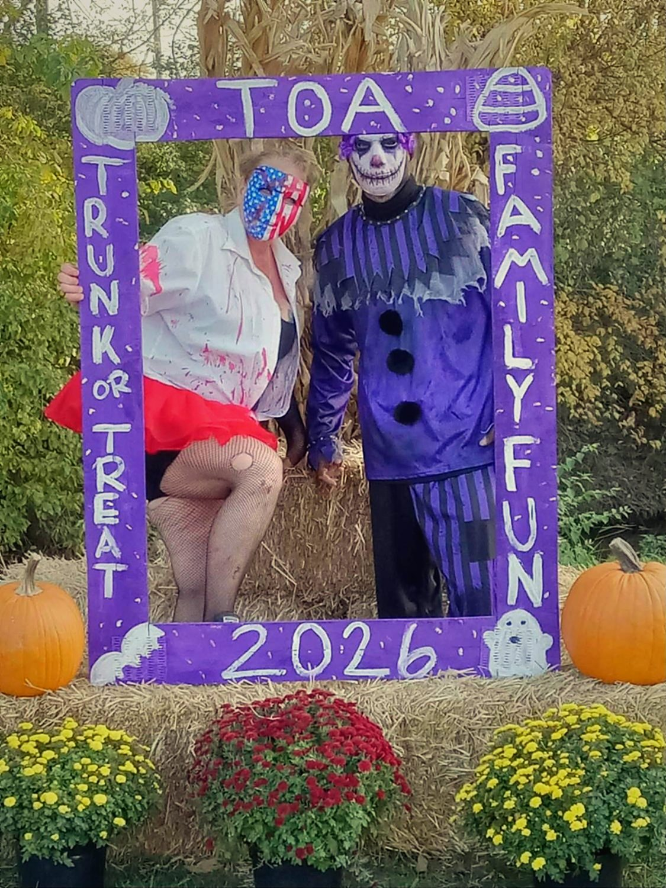
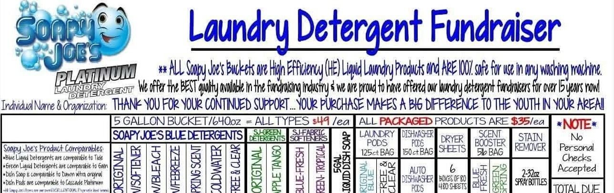
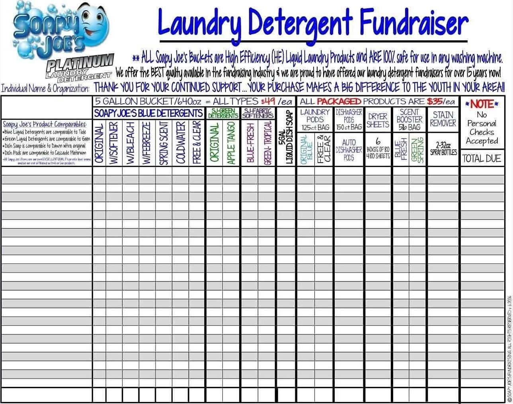

Third Annual Benefit Ride
Riders met at Pipe Creek Roadhouse in Alexandria for stops, food, music, a raffle and an auction.




T.O.A. is a Summitville, Indiana nonprofit teaching families the signs of overdose and raising money for a recovery center built for teens.
“There are SEVERAL recovery places out there for adults! NOT SO MUCH FOR OUR TEENS!”Brandy Branham, T.O.A. president
T.O.A. is looking for a building to open a safe place for teens who are struggling with, living with, or experiencing addiction.
Help open the doorT.O.A. is selling Soapy Joe’s household products. You buy things you already use, and the money goes to T.O.A.’s work educating youth about the dangers of substance use.

Riders met at Pipe Creek Roadhouse in Alexandria for stops, food, music, a raffle and an auction.

Fairmount Park, with recovery and support organizations on hand between games.

T.O.A. rode under the theme “Rockin’ Our Teens to Recovery.”
About 250 neighbors, 10 trunks, 4 bikes and more than 150 hotdogs.

Household products for your home, funding for T.O.A.

The frame is empty for now. Help T.O.A. fill it with a teen center.
GiveMost people never learn the signs until they need them. Seven to remember:
T.O.A.’s five-person board is from right here in east-central Indiana. Any of them can take a Soapy Joe’s order or answer a question.
President
Vice President
Secretary
Treasurer
Director-at-Large
Every balloon is a business or organization that gave T.O.A. a venue, a sign, a donation or an afternoon. Hover or tap one to see what they did.
Every gift goes toward T.O.A.’s events, education, and the teen center it’s working to open.
$TOAOrg
@TOAInc2026
Scan to give
Check that the recipient shown in PayPal is T.O.A. before you send.
Before you send, confirm the account name in your app shows T.O.A. This website will never ask for your payment login.